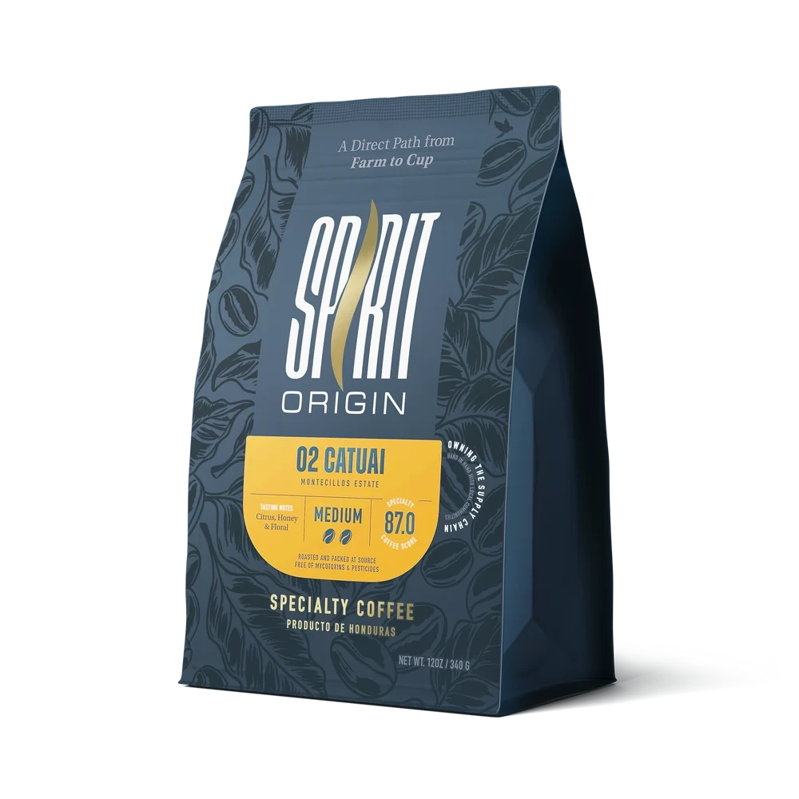
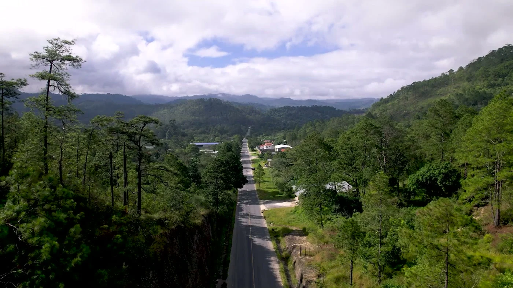
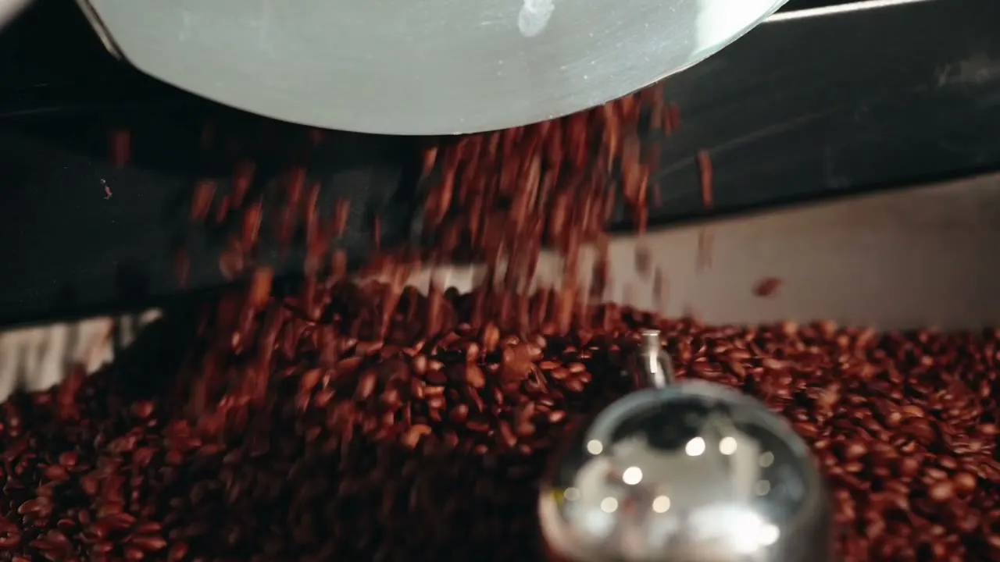
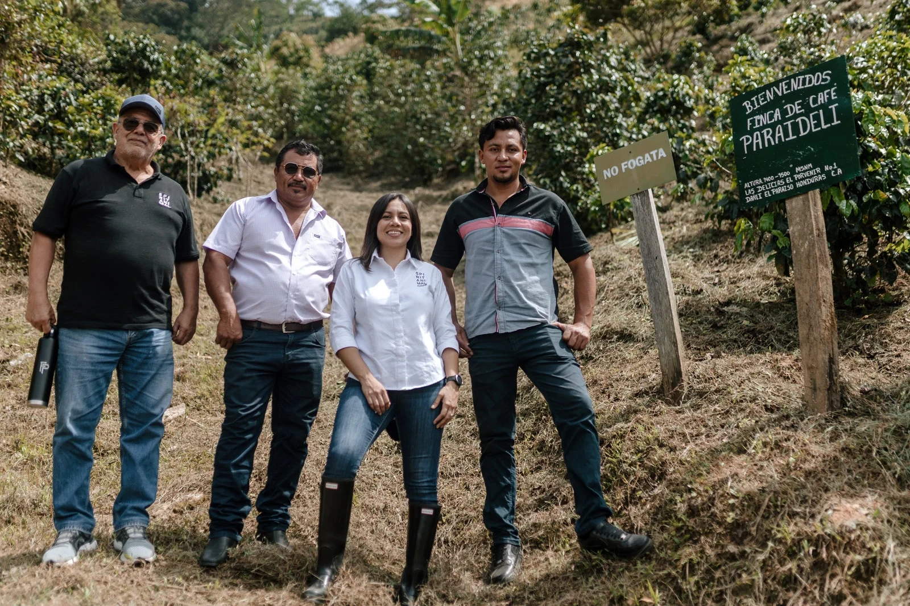
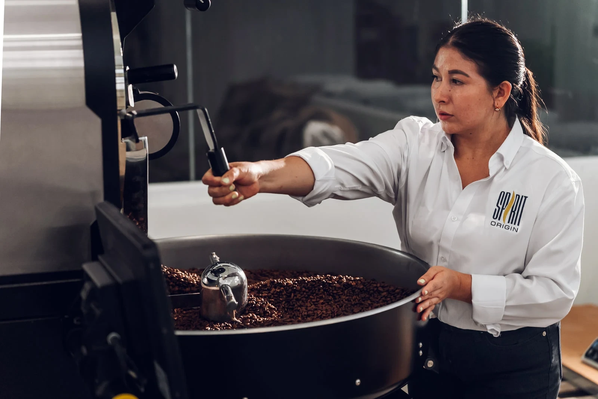
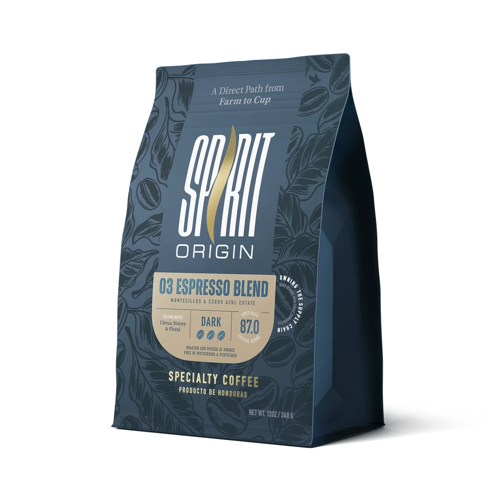
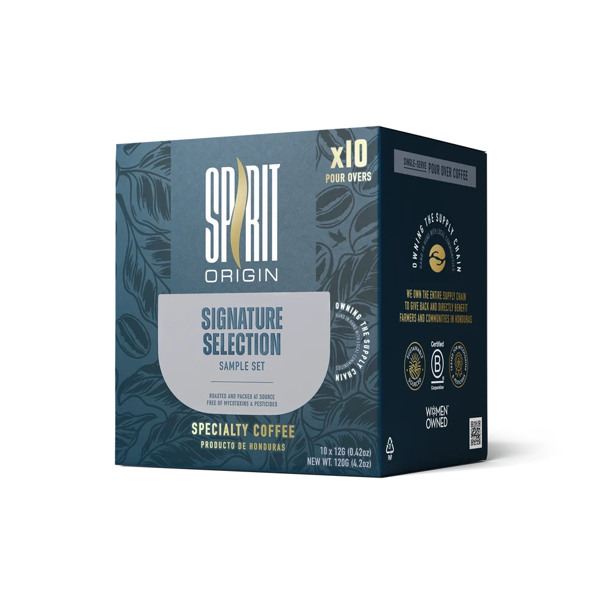
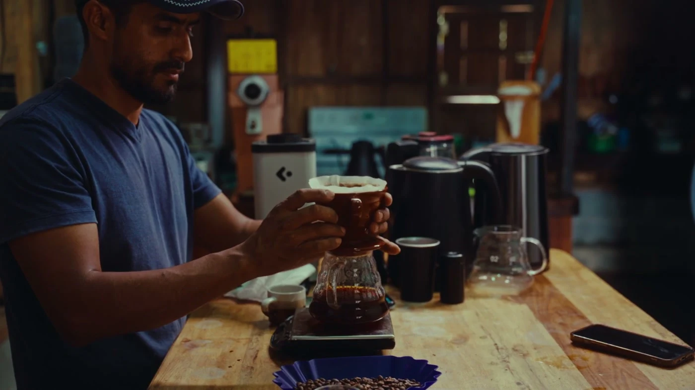

Catuai
Medium roastCitrus honey, sweet fruit & floral.
A fresh start, every morning.

Honduran specialty coffee.
Grown here. Roasted here.


Roasted in Honduras, too.
The place that grows it.
The hands that roast it.
Inside the Spirit Origin roastery
As you move down the page, a real photographic sequence follows the coffee through the roaster. All information remains available without animation.
Coffee begins long before the first pour. In Honduras, it begins with the land and the people who know it.
Spirit Origin brings growing and roasting closer together, keeping the story connected to its source.
Meet Spirit Origin

FROM HONDURAS.
TO YOUR CUP.
Start with a familiar ritual. Meet a different origin.
Showing all 3 coffees
Citrus honey, sweet fruit & floral.
A fresh start, every morning.

For the espresso ritual.
Make a little time for it.

Your coffee, wherever.
Just add a cup and hot water.
Explore freely. This concept bag is a demo, not a purchase. Prices and availability live on the official store.

However you take your coffee, start with the ritual you love.
Explore Catuai for your next filter brew. Grind fresh, follow your brewer’s recipe, and make the morning yours.
Spirit Animal is now Spirit Origin. This independent concept uses the current Spirit Origin identity and original product photography.
Spirit Origin roasts in Honduras, the country where its coffee is grown. The roastery sequence above uses actual brand footage.
Not on this demo. You can explore coffee and build a local demo bag. For current prices, shipping, availability and secure checkout, visit the official Spirit Origin store.
Visit official store